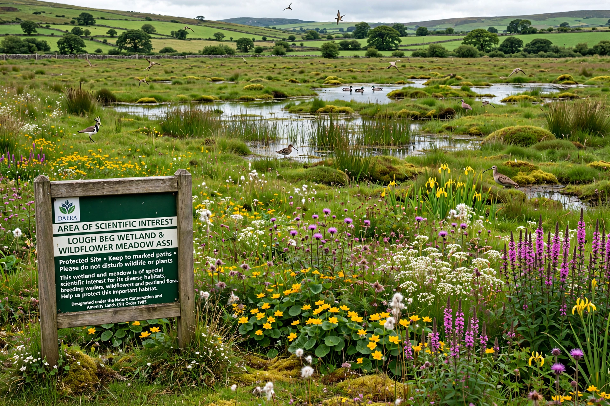

An Area of Special Scientific Interest (ASSI) is a conservation designation denoting a protected area in Northern Ireland. It is the local equivalent of a Site of Special Scientific Interest (SSSI) in the rest of the United Kingdom.

| ASSI | |
|---|---|
| Region | Northern Ireland |
| Administered by | Northern Ireland Environment Agency |
| Legal basis | Environment (Northern Ireland) Order 2002 |
ASSIs are designated by the Northern Ireland Environment Agency (now part of DAERA) for their flora, fauna, geological or physiographical features. Landowners must be notified of operations likely to damage the special interest, and consent is required before such operations proceed.
The system was introduced under the Nature Conservation and Amenity Lands (Northern Ireland) Order 1985 and strengthened by the Environment Order 2002, replacing earlier, weaker protections.